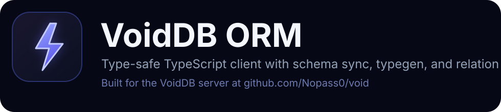

Official TypeScript ORM for VoidDB with short `vdb` commands, `.schema` files, generated declarations in `.voiddb/generated`, schema pull and push, migrations, and a typed query builder that can emit raw JSON.
`vdb init`, `vdb pull`, `vdb push`, `vdb gen`, `vdb dev`, `vdb status`, and `vdb deploy` are built in.
Projects get `.voiddb/config.json`, `.voiddb/schema/app.schema`, `.voiddb/generated`, and `.voiddb/migrations`.
Generated `.d.ts` files and folder-level re-exports keep model types easy to import.
Use the fluent builder for typed filtering, then call `.json()` when you need the raw query payload.
npm install @voiddb/ormbun add @voiddb/ormThe CLI reads `.env`, `.env.local`, `.voiddb/.env`, and `.voiddb/config.json` automatically.
npx --package=@voiddb/orm vdb init.voiddb/
config.json
schema/
app.schema
generated/
voiddb.generated.d.ts
index.d.ts
index.js
migrations/import { VoidClient, query } from "@voiddb/orm";
const client = VoidClient.fromEnv();
await client.login(
process.env.VOIDDB_USERNAME!,
process.env.VOIDDB_PASSWORD!
);
const users = client.db("app").collection("users");
const rows = await users.find(
query()
.where("active", "eq", true)
.orderBy("createdAt", "desc")
.limit(20)
);
const plainRows = rows.toArray();
const jsonRows = rows.json();const raw = query()
.where("age", "gte", 18)
.orderBy("name")
.limit(10)
.json();
console.log(raw);Direct equality shorthand works too: `find({ where: { isAdmin: false } })`. If you prefer, `.query(...)` is an alias for `.find(...)`.
datasource db {
provider = "voiddb"
url = env("VOIDDB_URL")
}
generator client {
provider = "voiddb-client-js"
output = "../generated"
}
database {
name = "app"
model User {
id String @id
email String @unique
name String
createdAt DateTime @default(now())
updatedAt DateTime @default(now()) @updatedAt
@@map("users")
}
}Older top-level `model ...` syntax is still supported for compatibility.
npx --package=@voiddb/orm vdb pull
npx --package=@voiddb/orm vdb push
npx --package=@voiddb/orm vdb gen
npx --package=@voiddb/orm vdb dev --name add_users
npx --package=@voiddb/orm vdb status
npx --package=@voiddb/orm vdb deploybunx --package @voiddb/orm vdb init
bunx --package @voiddb/orm vdb pull
bunx --package @voiddb/orm vdb dev --name add_usersAfter local install you can use `npx vdb ...` or `bunx vdb ...` directly.
VOIDDB_URL=https://db.lowkey.su
VOIDDB_USERNAME=admin
VOIDDB_PASSWORD=your-passwordnpx vdb pull
npx vdb push
npx vdb dev --name add_status
npx vdb statusType generation runs automatically after `pull`, `push`, `dev`, and `deploy` unless `--no-generate` is passed. Schema sync only touches databases explicitly present in the schema file.
import type {
User,
VoidDbGeneratedCollections,
VoidDbGeneratedCollectionsByPath,
VoidDbGeneratedDatabases,
} from "./.voiddb/generated";
type ExactLowkeyUser = VoidDbGeneratedDatabases["lowkey"]["users"];
type AnyUsersCollection = VoidDbGeneratedCollections["users"];
type ExactPath = VoidDbGeneratedCollectionsByPath["lowkey/users"];const result = await client
.db("app")
.collection("users")
.findWithRelations<{
profile: { _id: string; bio: string };
}>(
query()
.where("_id", "eq", "user-1")
.include({
as: "profile",
relation: "many_to_one",
target_col: "profiles",
local_key: "profile_id",
foreign_key: "_id",
})
);await client.cache.set("session:alice", { ok: true }, 3600);
const session = await client.cache.get("session:alice");
await client.cache.delete("session:alice");